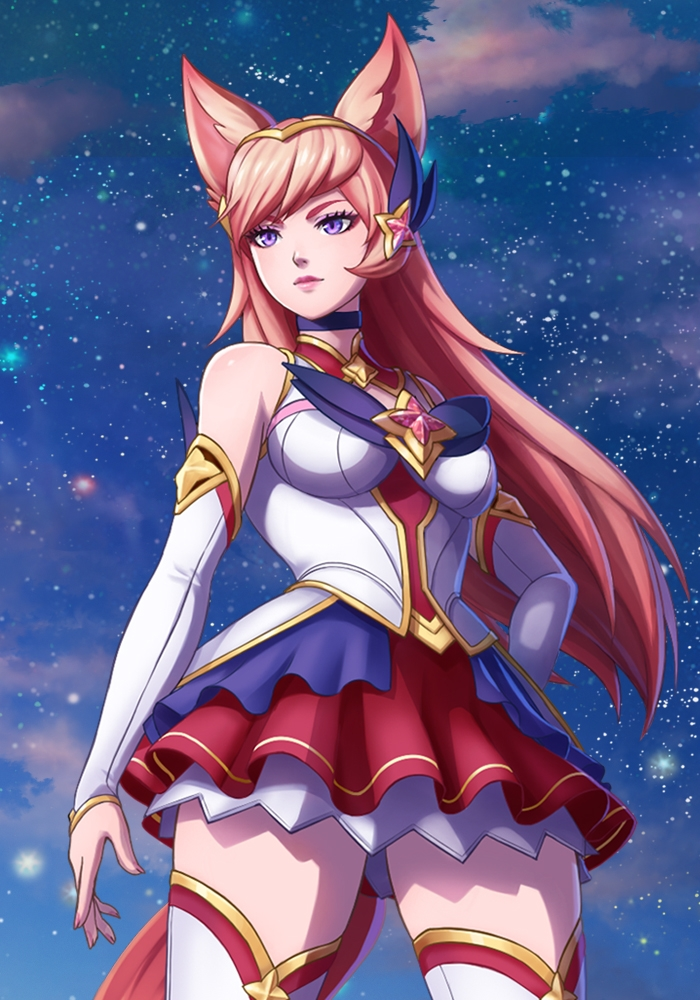

Guardianas

Ahri
Ahri es una capitana carismática que lidera un equipo de guardianas de las estrellas veteranas y novatas provenientes de los límites del cosmos. Habiendo sufrido el dolor de perder a compañeros en acto de servicio, protege con fiereza a su "familia", y un fuerte deseo arde en su interior: asegurarse de que nadie de los que le importan vuelve a desvanecerse. Estos sucesos también han determinado cómo se dirige a otros equipos y a sus capitanas, sobre todo a las menos curtidas, como Lux. En su universo, ya no hay cabida para la paciencia y la comprensión, solo mano firme. A pesar de ello, nadie es inmune a los encantos únicos de Ahri.